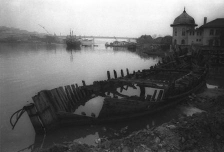

Bugünkü Eyüp, bir kaza merkezidir. Ve tam teşkilatlı bir idare cihazına maliktir. Mevkii itibariyle, oldukça büyük bir ehemmiyeti haizdir. Fakat ne yazık ki, İstanbul’un her tarafında az çok ümran ve terakki eserleri görüldüğü halde, Eyüp Sultan, daha hâlâ ehemmiyetiyle mütenasip derecede ciddi bir alaka görememiştir.
Eyüp kazası halkı, 32 bin kişiyi mütecavizdir (aşkındır). Arazisi de, 2850 metre kare genişliğindedir.
Kazanın, Eyüp–Defterdar–Nilanca Dövmeciler–İslambey isminde beş mahallesi ile Kâğıthane deresinin şimal cihetinde ve Silahtarağa’nın üstünde Alibeyköy’ü adında bir de köyü vardır.
Bu köy, tarihi kıymeti haizdir. İkinci Sultan Mahmut devrinde, Alemdar Mustafa Paşa’nın Rumeli ordusu Kâğıthane’de büyük bir resmigeçit yaptıktan sonra, bu köyde toplanan devlet tarafından bazı mühim kararlar verilmiştir.
Bilindiği gibi, Selim, devlet ve milleti teceddüt (yenilenme) ve terakkiye (ilerlemeye) sevk etmek hususundaki azmine kurban gitmiş, Kabakçı Mustafa denilen bir şeririn ayaklandırdığı zorbalar tarafından şehit edilmişti.
Vaka, mühimdi. Koskoca Osmanlı İmparatorluğu, adeta derin bir felaket uçurumunun kenarına gelmişti. İstanbul, asilerin elindeydi. Vilayetlerde de bazı eşraf, ayan ve mütegallibe başkaldırarak yer yer ihtilaller vukua getirmişlerdi.
İşte, devletin bu tehlikeli vaziyetinde, Tuna orduları kumandanı Alemdar Mustafa Paşa güzide silahşorlardan mürekkep bir ordu ile İstanbul’a geldi. Asileri, şiddetle te’dip etti (yola getirdi). Ve korkulan büyük tehlikenin önüne geçti.
Alemdar Mustafa Paşa, Sadaret mevkiine geçerek devletin idaresini eline almıştı. Ve taşrada başkaldıran ayan ve eşrafı da İstanbul’a çağırmıştı. Maksadı onların yine eskisi gibi sadakatlerini teminat altına almaktı. Devlet erkânı ile uzun uzadıya cereyan eden müzakereden sonra, bunlarla bir ittifak senedinin imzalanması kararlaştırılmıştı.
Bunlardan bir kısmı, tanıdıkları devlet erkânından aldıkları talimat mucibince İstanbul’a gelmişti. Lâkin bir kısmı, Alemdar Mustafa Paşanın zorbalara tatbik ettiği şiddetten ürkerek gelmeye cesaret edememişler, kendilerine teminat verildikten sonra gelenler de, şehre girmeyerek Davutpaşa, Rami, Kâğıthane gibi İstanbul’un seyir yerlerinde çadırlar kurarak hadisata intizar etmişlerdi.
Bu suretle aradan on beş yirmi gün kadar geçmişti. Babıâli’de cereyan eden müzakereler neticesinde bunlara kır ziyafeti çekilerek aradaki anlaşmazlığı kaldırılmasına karar verilmişti.
Bu ziyafetler de verilerek Alemdar Mustafa Paşa ile temastan çekinen eşref ve ayanın bir dereceye kadar emniyetleri celbedildikten sonra Sadrazam, Şeyhülislam vesair devlet erkânı Alibeyköy’ü ile Bahariye arasında kurulmuş olan çadırlara geldiler. Burada Rumeli ve Anadolu’dan celbedilmiş olan eşraf ve ayana büyük bir ziyafet daha çektiler. Ve Padişah 2’inci Sultan Mahmud’un gelmesini beklediler.
Sultan Mahmut, saltanat kayığı ile Kâğıthane’ye geldi. Bir müddet, Çağlayan Köşkünde istirahat etti. Sonra eşraf ve ayanı kabul ederek hepsine ayrı ayrı kürklü kaftanlar mücevher işlemeli hançerleri hediye verdi. Ziyafetler çekti. Sonra, Kâğıthane deresinin kenarında bulunan Rumeli askerlerine bir geçit resmi icra ettirdi. Bunların kumandanlarını çağırtarak:
— Çok güzel askerleriniz var. Hak Teâlâ, düşmanlara galip etsin, diye onlara da taltif etti (lütufda bulundu).
Bu toplantı gerek oraya davet edilmiş olan eşraf ve ayana ve gerek hükümetin akametinden endişe içinde bulunan eşraf ve ayana büyük bir emniyet vermişti. Hatta “Bu toplantı bir zamanlar, Alibeyköy’ü içtiması olmasaydı, şimdi yerimizde yeller esecekti.” Diye dillerde gezmişti.
Eyüp kazasının biri Rami diğeri de Burgaz adında iki nahiyesi vardır. Bunlardan Rami, birçok tarihi hatıralar bırakmıştı. Yeniçerilerin isyanlarında Rami kışlası, çok mühim roller oynamıştı.
Nitekim Yeniçerilerin kâmilen (tamamen) kaldırılışında Rami kışlası, çok mühim roller oynamıştı. Nitekim Yeniçeriler kâmilen kaldırıldığı halde, orada Saya ocağı namı altında bir bölük bırakılmıştı. Vakıa bu ocakların askerlikle hiçbir alakası kalmamıştı. Lâkin bunlar yine, saltanat makamına karşı sadakatlerini muhafaza etmiş olmak için üzerlerine bir vazife almışlardı.
Kurban bayramlarında, Padişahların ve saray halkının kesmeleri adet olan kurbanları besleyip yetiştiriyorlar, bayramdan bir gün evvel onları merasimle saraya getirip teslim ediyorlar, Padişahtan ve saray erkânından bahşişler alıyorlardı. Bunların üzerlerine aldıkları bu vazife, saltanatın ilgası zamanına kadar devam etmişti. Bu ocağın efradının adedi otuz, kırk kişiden fazla değildi. Senenin diğer zamanlarında ortada görünmezlerdi.
Ancak kurban bayramına takaddüm eden günlerde şehre inerler, uzun siyah cübbeleri, bir tarafa eğrilmiş olan beyaz yün çoraplarının bağlarını teşkil eden püsküllerini sallaya sallaya İstanbul sokaklarında gezerler, görenlerin hayretlerini celbederlerdi.
Eyüp Sultan mıntıkası, öteden beri bir hayli servet membaına malikti. Bütün o civardaki bağlarda, bahçelerde ve bostanlarda turfanda meyve ve sebzeler yetiştirirler, halkın mühim bir kısmı, bununla gül gibi geçinirlerdi.
Burgaz nahiyesinin ve bilhassa Boğazköy, İmrahor ve Bozluca köylerinin halkı, o civardaki meşe fundalıklarından faydalanarak kömürcülük ederlerdi. Karadeniz sahilindeki Kilyos, Akpınar ve sair birkaç köyün halkı da kısmen balıkçılık ve kısmen de kömürcülükle geçinirlerdi. Bunlardan bazıları deve beslerler ve kömürlerini o develerle İstanbul’a getirerek Fatih camisinin arkasındaki açık avluda satarak kiraz mevsiminde orada adeta bir kömür pazarı vücuda getirirlerdi.
Bunlardan başka Eyüp kazası, oldukça zengin tabii servetlere de malikti. Mesela, Ağaçlı kömür madeni, bu mıntıka dâhilindeydi. Bu kömür, linyit cinsinden olmakla beraber, Birinci Cihan Harbinde ordunun oldukça mühim ihtiyaçlarını temin etmişti. Her ne kadar bugün bu madenlerden büyük istifadeler edilmiyorsa da, yakında işletilecek olan Ağaçlı kömürlerinin İstanbul’da ehemmiyetli bir ticaret amili olacağından hiç şüphe edilmemelidir.
Eyüp Sultan’ın karşısındaki tuğla harmanları da oldukça mühim bir varidat membadır. Kâğıthane deresinin sürüp getirdiği mil denilen çamurdan çok sağlam yapı tuğlaları bilhassa ateş tuğlaları yapılmaktadır. Fakat bu tuğla ocaklarından çıkan dumanlarla fena kokular Eyüp Sultan semtinin saf havasını bozmakta olduğu için bunlardan daima şikâyet olunmaktadır.
Eyüp Sultan’ın varidat (gelir) kaynakları, sadece bunlardan ibaret değildir. Son zamanlarda birçok dokuma tezgâhları ile bulgur, pirinç, kırma, makarna imalathaneleri, çelik yay, tel, çivi, saçma, kurşun dökme atölyeleri vücuda getirilmiştir. Bu arada, Ayvansaray’daki Nur Kalem adındaki kurşun kalem fabrikası ile tohumlardan nebati yağ çıkaran bir fabrika da, bir hayli işçi ve ameleyi geçindirmektedir.
